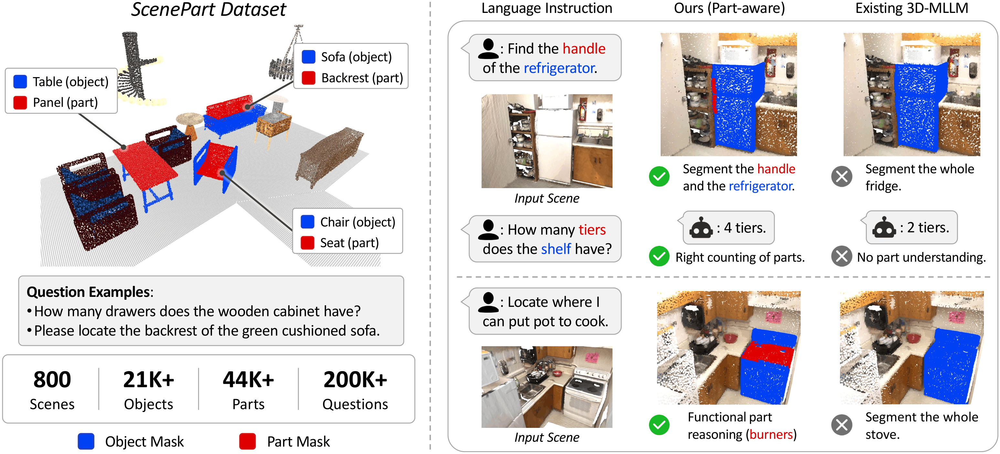
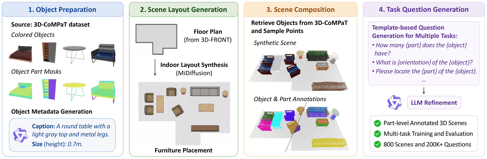
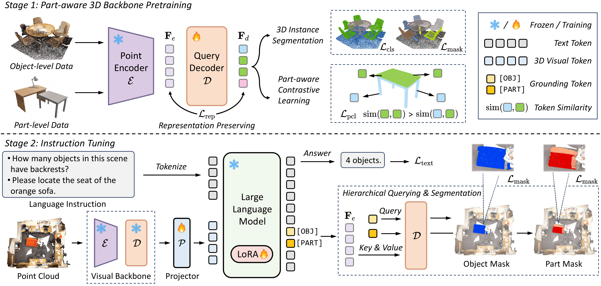
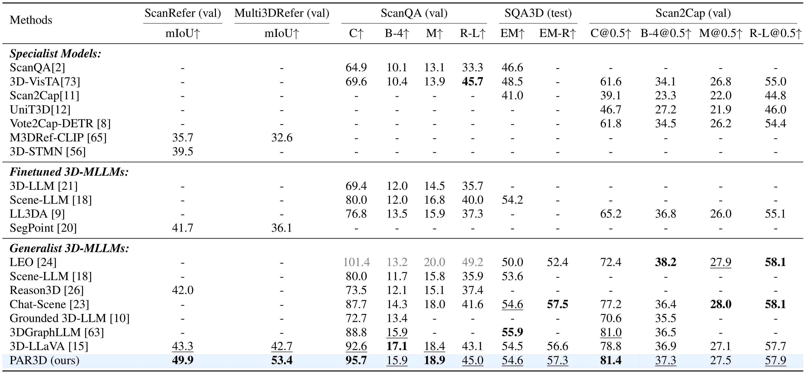
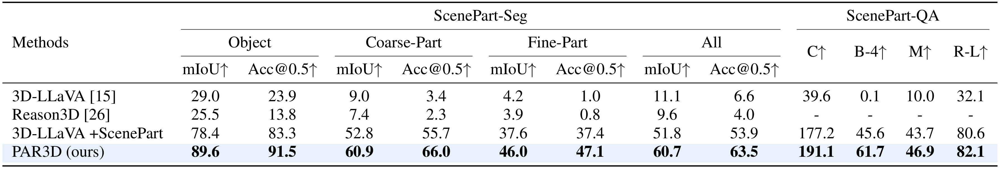
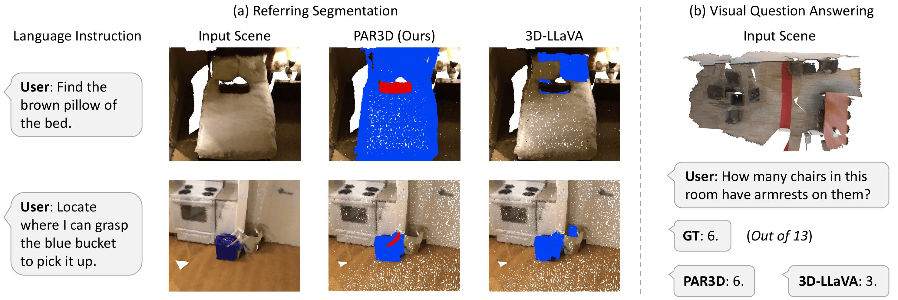

ScenePart Supervision
Object- and part-level masks with object-part correspondences provide dense supervision in complete 3D scenes.
Key Laboratory of Multimedia Trusted Perception and Efficient Computing,
Ministry of Education of China, Xiamen University
* Equal contribution. † Project lead. ‡ Corresponding author.

PAR3D is a unified part-aware 3D-MLLM that understands, reasons about, and grounds both objects and their fine-grained parts in 3D scenes.
Recent advances in 3D multimodal large language models (3D-MLLMs) have enabled unified solutions for 3D scene understanding tasks, including visual question answering, captioning, and referring segmentation. However, existing 3D-MLLMs remain largely object-centric, limiting their ability to model fine-grained part structures that are essential for embodied interaction with 3D environments.
In this work, we present PAR3D, a unified part-aware 3D-MLLM framework that enables models to understand, reason about, and ground both objects and their parts in 3D scenes. To enable training and evaluation of part-aware 3D scene understanding, we introduce ScenePart, a synthetic 3D scene dataset with part-level annotations and language instructions. We further develop Part-Aware 3D Representation Learning to enrich 3D visual representations with fine-grained part-level semantics, and propose Hierarchical Segmentation Query Generation to ground part targets via hierarchical object-part queries.
Extensive experiments show that PAR3D substantially improves part-level question answering and referring segmentation, while also achieving strong performance across object-level vision-language tasks.
Dataset
ScenePart composes part-annotated 3D objects into synthesized indoor layouts, producing object- and part-level mask annotations in 3D scenes and multi-task language instructions for training and evaluating part-aware 3D-MLLMs.

Method
PAR3D supports diverse 3D vision-language tasks over both objects and their parts through scene-level part supervision, part-aware representation learning, and hierarchical segmentation queries.
Object- and part-level masks with object-part correspondences provide dense supervision in complete 3D scenes.
Part-aware contrastive learning and representation-preserving regularization enrich visual features with fine-grained part semantics.
Granularity-aware grounding tokens distinguish object-level and part-level targets for unified textual response and mask prediction.

Results
PAR3D improves both object-level 3D vision-language performance and part-aware scene understanding across referring segmentation, question answering, and dense captioning benchmarks.


Qualitative Results
PAR3D demonstrates fine-grained object-part grounding and part-aware reasoning in real and synthetic 3D scenes.

Each scene below is a live 3D point cloud. Drag to rotate, scroll to zoom.
Each row is one live 3D scene. Drag any panel to rotate; the rest of the row follows once you release.
If you find PAR3D useful for your research, please consider citing our work.
@article{dai2026par3d,
title={PAR3D: A Unified 3D-MLLM with Part-Aware Representation for Scene Understanding},
author={Dai, Shaohui and Qu, Yansong and Shen, You and Zhang, Shengchuan and Zhang, Miaohui and Cao, Liujuan},
journal={arXiv preprint arXiv:2606.06485},
year={2026}
}